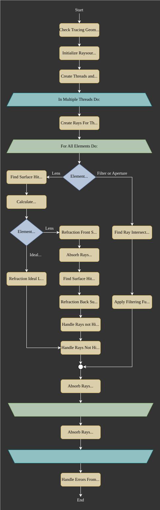

5.2. Tracing Procedure#
5.2.1. Tracing Process#
Main steps of the tracing process are surface hit detection, refraction index and direction calculation as well as handling of non-hitting rays. For ideal lenses, filters and apertures only one surface hit detection takes place, while a normal lens requires two. Doing almost all calculations in threads speeds up the computations. Every thread gets some rays assigned which are only processed within the same thread. This includes the ray creation and propagation through the whole system. While not explicitly mentioned, new ray polarization and weights are calculated in the refraction calculation function.
{kind=link}

Fig. 5.6 Tracing process flowchart.#
5.2.2. Refraction#
Commonly found forms of the law of refraction are composed of an input and output angle. For the tracing process a form having only vectors as parameters, as well as circumventing the calculation of any angles, would be more convenient.
The following figure shows the refraction of a ray on a curved surface.

Fig. 5.7 Refraction on a curved interface.#
\(n_1, n_2\) are the refractive indices of the media, \(s,s'\) input and output propagation vectors. Both these vectors, as well as the normal vector \(n\), need to be normalized for subsequent calculations. Note that \(s\) and \(n\) need to point in the same half space direction, meaning \(s \cdot n \geq 0\).
An equation for such a form of the refraction law can be found in [1] or [2]:
In case of total internal reflection (TIR) the root argument becomes negative. In optrace TIR rays get absorbed, as reflections are not modelled, and the user is notified with a message.
5.2.3. Polarization#
The following calculations are similar to [3].
The polarization vector \(E\) can be decomposed into a \(E_\text{p}\) -component, lying in the surface normal - incidence vector plane, and a \(E_\text{s}\) -component lying perpendicular to this plane. With refraction on an interface the component \(E_\text{s}\) is equal for both ray vectors \(s, s'\), while \(E_\text{p}\) is rotated around \(E_\text{s}\) towards \(s'\) creating the new component \(E_\text{p}'\). Note that for our calculations all vectors are unity vectors, while length information of the polarization components is contained in the scaling factors \(A_\text{tp}, A_\text{ts}\).

Fig. 5.8 Ray polarization components before and after refraction.#
Case 1:
For \(s \parallel s'\) the new polarization vector is equal to the old one.
Case 2
For \(s \nparallel s'\) the new polarization vector differs from the old one.
According to optics the polarization and polarization components need to be orthogonal to the propagation direction. Additionally, both polarization components are perpendicular to each other. Assuming all mentioned vectors are unity vectors, we can calculate:
Since \(||E_\text{p}|| = ||E_\text{s}|| = ||E|| = 1\) the amplitude components are then:
For the new polarization unity vector, which also composed of two components, we finally get
5.2.4. Transmission#
The new ray powers are calculated from the transmission which in turn can be calculated from already derived properties in refraction calculation.
According to the Fresnel equations the transmission of light is dependent on the polarization direction. The subsequent equations describe this behavior [4].
\(A_\text{ts}\) and \(A_\text{tp}\) are the polarization components from equations (5.19). Occurring cosine terms are calculated from the direction and normal vectors as \(\cos \varepsilon = n \cdot s\) and \(\cos \varepsilon' = n \cdot s'\).
For light hitting the surface perpendicular this yields an expression independent of the polarization: [5]
5.2.5. Refraction at an Ideal Lens#
Ray with unnormalized direction vector \(s_0\) and intersection \(P = (x_0, y_0, 0)\) on the lens with focal length \(f\) and the corresponding point on the focal plane \(P_f = (x_f, y_f, f)\). Optics tells us that ideally parallel rays meet in the same position in the focal plane. Therefore a ray with the same direction, but hitting the lens at the optical axis, can used to determine position \(P_f\).

Fig. 5.9 Geometry for refraction on an ideal lens.#
Cartesian Representation
Calculating positions \(x_f,~y_f\) is simply done calculating the linear ray equations \(x(z), y(z)\) at \(z=f\). For \(x_f\) we get:
Similarly for \(y_f\)
\(s_{0z} = 0\) is prohibited by forcing all rays to have a positive z-direction component.
Knowing point \(P_f\) the outgoing propagation vector \(s_0'\) is calculated.
Normalizing gets us:
Angular Representation
Taking the x-component of the propagation vector
and dividing it by \(f\) gives us
From Fig. 5.9 follows \(\tan \varepsilon_x' = \frac{s_{0x}}{f}\) and \(\tan \varepsilon_x = \frac{s_{0x}}{s_{0z}}\) and therefore
Analogously in y-direction we get
This angular representation is a formulation also found in [6].
5.2.6. Filtering#
When passing through a filter a ray with power \(P_i\) and wavelength \(\lambda_i\) gets attenuated according to the filter’s transmission function \(T_\text{F}(\lambda)\):
Additionally, ray powers get set to zero if the transmission falls below a specific threshold \(T_\text{th}\). By doing so, ghost rays are avoided, these are rays that still need to be propagated while raytracing, but hold only little power. Because their contribution to image forming is negligible, they should be absorbed as soon as possible to speed up tracing.
As a side note, apertures are also implemnted as filters, but with \(T_\text{F}(\lambda) = 0\) for all wavelengths.
5.2.7. Geometry Checks#
Geometry checks before tracing include:
all tracing revelant elements must be inside the outline
no object collisions
defined, sequential order
raysources available
all raysources come before all other kinds of elements
Collision checks are done by first sorting the elements and then comparing positions on adjacent surfaces. After randomly sampling many points it needs to be checked if the position order in z-direction is equal. While this doesn’t guarantee no collisions, while raytracing the sequentiality is checked for each ray and warnings are emitted.
5.2.8. Hit Finding#
Hit finding for analytical surfaces is described in Section 5.3.2 and for numerical/user function surfaces in Section 5.3.3.
5.2.9. Image Rendering#
Image rendering consists of two stages:
Hit detection with the detector
Image calculation from ray position and weights
Hit finding for a detector is more complicated as a normal surface, as there are no requirements for the detector position. It is therefore also possible for the detector to be inside other surfaces.
Instead of calculation a surface hit once, is is calculated for all sections of a ray that are inside the z-range of the detector. After knowing the hit coordinates, one can check if they fall inside the region where the ray section is defined and if it is therefore is a valid hit. In the other case only the ray section extension hits the surface, but the ray already changed direction due to a adjacent surface.
To speed things up, calculations are done in threads, while each thread gets a subset of rays. Rays not reaching the detector at all, starting before it or getting absorbed before hitting the detector are sorted out as early as possible.
At the end of the procedure it is known for each rays if it hits the detector and where. If an extent option was provided by the user, only the rays inside this extent are selected. Otherwise the rectangular extent gets calculated from the outermost rays.
If the detector is not planar (e.g. a sphere section) the coordinates are first mapped with a projection method that are described in Section 5.3.6. For all hitting rays a two-dimensional histogram is generated, with a beforehand defined pixel size. The pixel count is higher as requested, as each image is rendered in a higher resolution to allow for resolution changes after rendering, see Section 4.8.3.
Image rendering is also done in threads. The created RImage object hold images for the three tristimulus values X, Y, Z, that can encompass all human-visible colors. The illuminance image can be directly calculated from the Y component and the pixel size, so an explicit rendering of this image is not required. The fourth image is an irradiance image, which is calculated from the ray powers and the pixel sizes. The aforementioned threads each get one of the four images.
After image rendering the image is optionally filtered with an Airy-disk resolution filter and then rescaled to the desired resolution.

Fig. 5.10 Detector intersection and image rendering flowchart.#
5.2.10. Spectrum Rendering#
Spectrum rendering works in a similar way to image rendering.
Ray intersections are calculated, only hitting rays are selected and a histogram is rendered.
But compared to an image, this is a spectral histogram within a wavelength range resulting from the rays wavelengths and powers.
Instead of an RenderImage a LightSpectrum object is created with type "Histogram".
The number of bins for the histogram is:
This formula ensures \(N_\text{b}\) is odd, so the center is well-defined. Independent of the number of rays \(N\) the minimum of bins is set to 51 and scales with the square root of this number above a specific value. The latter is due to the SNR of the mean also increasing with \(\sqrt{N}\) for normal-distributed noise. So the number of bins is adapted so that the SNR stays the same, but the spectrum resolution increases.
References